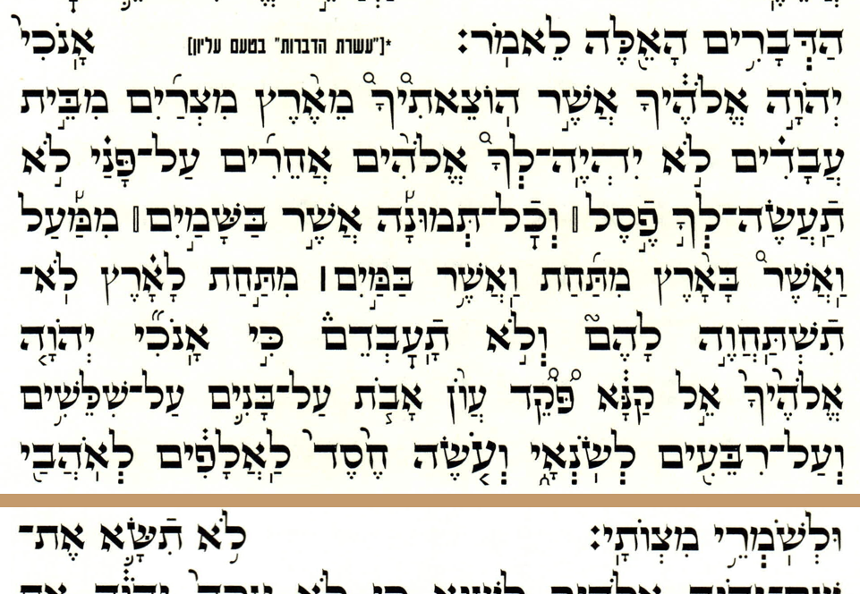
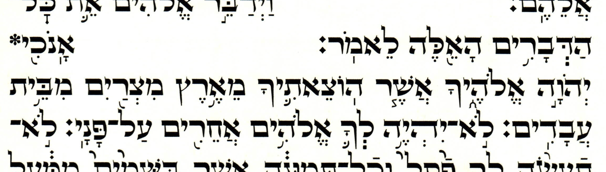
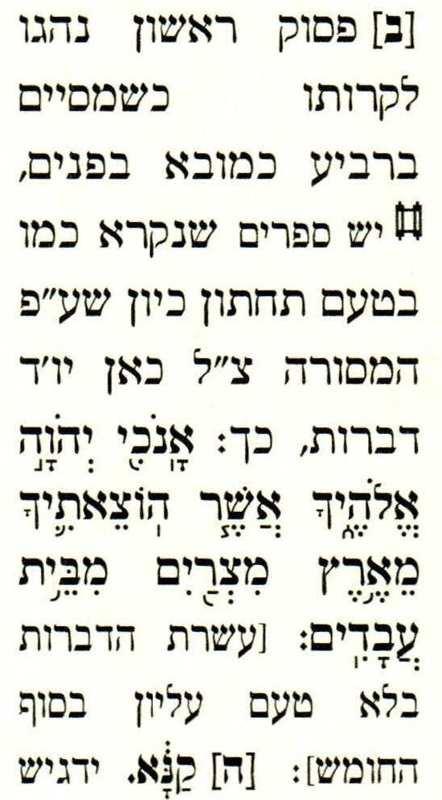
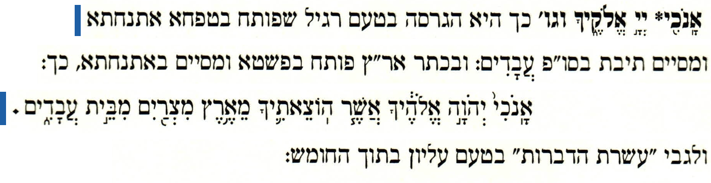
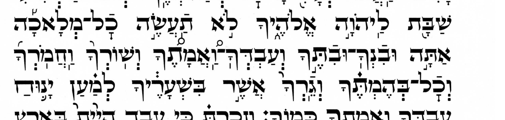
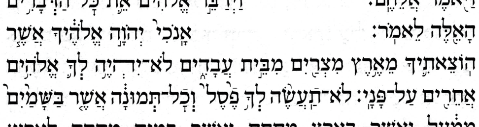
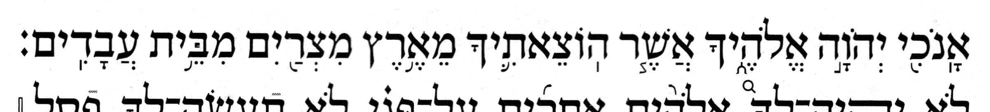

As the companion page explains, each Decalogue has four strands of cantillation: the printed tradition (p-trad) and the manuscript tradition (m-trad) each have their own טעם תחתון and their own טעם עליון. The most striking difference between the four strands is how they divide up the span אנכי…מצותי into chanted verses. (This span is typically identified as comprising the first two Commandments.)
That page lays out those four strands and grammar-checks the p-trad; this page serves only to document to what extent Simanim's Tiqqun follows the p-trad. Along the way it transcribes two of the Tiqqun's notes.
Simanim's Tiqqun follows the p-trad's chanted verse boundaries for the Decalogues, though not every detail of its cantillation — the one departure, at a single commandment of its Deuteronomy appendix Decalogue, is covered in the conclusion. In its Exodus (Yitro) Decalogue, the Tiqqun's main Decalogue (p. 83) is the p-trad עליון and its appendix Decalogue (p. 246) is the p-trad תחתון. The comparison throughout is against Hebrew Wikisource's p-trad. The two scans below show enough of the Tiqqun's Exodus Decalogues to "diagnose" them both as p-trad by their signal words.


A note in the side margin of the Exodus (Yitro) Decalogue, on אנכי…עבדים.
| Source scan | Transcription |
|---|---|
 | [ב] פסוק ראשון נהגו לקרותו כשמסיים ברביע כמובא בפנים, יש ספרים שנקרא כמו בטעם תחתון, כיון שע״פ המסורה צ״ל כאן יו׳ד דברות, כך: אָֽנֹכִ֖י יְהֹוָ֣ה אֱלֹהֶ֑יךָ אֲשֶׁ֧ר הֽוֹצֵאתִ֛יךָ מֵאֶ֥רֶץ מִצְרַ֖יִם מִבֵּ֥ית עֲבָדִֽים׃ [עשרת הדברות בלא טעם עליון בסוף החומש]. |
[{Verse 20:}2] {Regarding} the first {pseudo-?} verse — it is the custom of some to chant it as ending on a revia, as given in the body; {but} there are editions that call for it to be chanted as in the תחתון since by the Masorah there must be Ten Commandments here — thus:
אָֽנֹכִ֖י יְהֹוָ֣ה אֱלֹהֶ֑יךָ אֲשֶׁ֧ר הֽוֹצֵאתִ֛יךָ מֵאֶ֥רֶץ מִצְרַ֖יִם מִבֵּ֥ית עֲבָדִֽים׃
[The Ten Commandments without the עליון cantillation {can be found} at the end of the ḥumash.]
Notation: text in {curly braces} is my editorial addition; [square brackets] reproduce square brackets present in the source itself.
The note is worth reading for what it reveals about the Simanim Tiqqun's own stance: its default עליון ends the אנכי…עבדים span on a revia — the nine-verse p-trad structure — and it files the standalone, ten-verse cantillation (silluq + sof pasuq at עבדים) under what merely “some books” do. So the Tiqqun treats the p-trad structure as the norm and the m-trad alternative as the deviation — aware of the alternative, but not adopting it. Koren's note on its appendix Decalogue is the mirror of this one, flagging the same alternative on the authority of רוו״ה and likewise declining to print it.
The mirror footnote, from the appendix's תחתון Decalogue (which the Simanim Tiqqun heads only negatively, בלא טעם עליון — lacking the עליון), on the lemma אנכי.

אָֽנֹכִ֖י* יְיָ֣ אֱלֹהֶ֑יךָ וגו׳
כך היא הגרסה בטעם רגיל שפותח בטפחה אתנחתא ומסיים תיבת בסו״פ עֲבָדִים: ובכתר אר״ץ פותח בפשטא ומסיים
באתנחתא, כך: אָֽנֹכִי֙ יְהֹוָ֣ה אֱלֹהֶ֔יךָ אֲשֶׁ֧ר הֽוֹצֵאתִ֛יךָ מֵאֶ֥רֶץ מִצְרַ֖יִם מִבֵּ֣ית
עֲבָדִ֑ים. ולגבי "עשרת הדברות" בטעם עליון בתוך החומש:
The lemma is shown in blue in our transcription rather than boldface as in the original.
It isn't clear whether the mark after עבדים in the transcription is a sof pasuq or a colon; I read it as a colon.
אָֽנֹכִ֖י* יְיָ֣ אֱלֹהֶ֑יךָ Such is the version in the ordinary cantillation, which opens with tipeḥa–etnaḥta and ends with the sof pasuq word עֲבָדִים; but in the Keter Aram Tsova it opens with pashta and ends with etnaḥta, thus: אָֽנֹכִי֙ יְהֹוָ֣ה אֱלֹהֶ֔יךָ אֲשֶׁ֧ר הֽוֹצֵאתִ֛יךָ מֵאֶ֥רֶץ מִצְרַ֖יִם מִבֵּ֣ית עֲבָדִ֑ים. And as regards the “Ten Commandments” in the עליון within the ḥumash: {see the main part of the ḥumash?}
On the Simanim Tiqqun's citing the כתר אר״ץ (Aleppo Codex) here — what that citation can and cannot mean — see the note below.
The note contrasts two cantillations of the אנכי…עבדים span, both in the four-strands table on the companion page:
| the note's label | עבדים | אנכי | = strand (companion page) |
|---|---|---|---|
| בטעם רגיל (ordinary) | silluq + sof pasuq | tipeḥa | p-trad תחתון = m-trad עליון, through עבדים |
| כתר אר״ץ | etnaḥta | pashta | m-trad תחתון |
So the note has the Simanim Tiqqun, in its own editorial voice, distinguishing two תחתון cantillations of the אנכי…עבדים span: what it prints and calls the “ordinary” (רגיל) תחתון — עבדים with silluq + sof pasuq, אנכי…עבדים as its own verse, its marks identical through עבדים to the m-trad עליון — versus the Keter's pashta…etnaḥta, the genuine m-trad תחתון, which it sets aside. The Tiqqun thus knows the two differ and knowingly prints the newer one — another glimpse of the same self-awareness as the p. 83 margin note.
Simanim's Tiqqun follows the p-trad for the Decalogues, not the m-trad — fully as to chanted verse boundaries, though (per the first scope note below) not in every cantillation detail. The two traditions' most consequential divergence is over the opening span אנכי…מצותי — within each strand, a divergence of chanted verse boundaries, which can be read off the accents on the span's two signal words, עבדים and על־פני: where a signal word has a silluq + sof pasuq that strand ends a chanted verse there, and where it has an etnaḥta or a revia it runs on. The Simanim Tiqqun lands on the p-trad side of that divergence on both strands: the p-trad עליון in its Exodus main Decalogue (p. 83), and the p-trad תחתון in its appendix Decalogue (p. 246).
How far each of the four Decalogues follows that strand is a separate question from which strand it is, and one the signal words cannot answer. The verdicts are per Decalogue, since they differ. The last column adds the question the companion page asks of the four idealized strands, asked here of what this book actually has: run through the same prose grammar checker, does it parse?
One thing to settle first, since it decides what these verdicts mean. A maqaf belongs on the same scale as the accents, at the bottom of it: it separates the atom it sits on — one written word — from the next even less than a conjunctive accent does, binding the two into a single chanted word, the unit an accent marks. So where an edition has a maqaf on an atom and its Wikisource strand a conjunctive accent, or the other way about, that is one difference in how that atom is marked — an exchange one rung deep, counted once and not twice as a regrouping plus an accent. It is, though, the mildest difference there is, and that is what these verdicts measure: how far down the scale each Decalogue's agreement with that strand reaches — the chanted verse boundaries, then the disjunctive skeleton, then the conjunctives, then the maqafs.
| Decalogue | pages | strand | how far it follows it | under the prose checker |
|---|---|---|---|---|
| Exodus main | 83–84 | p-trad עליון | Every chanted verse boundary, the whole disjunctive skeleton, and every chanted word marked as its Wikisource strand marks it but two, each an exchange at the last rung. At ובנך the Wikisource strand has a maqaf where the Tiqqun has a munaḥ, separating what the Wikisource strand's maqaf makes one chanted word; at the לא of לא תחמד the Wikisource strand has a merkha where the Tiqqun has a maqaf, binding what that strand leaves free. | Its Wikisource strand's verdicts: chanted verse 1 ungrammatical, the other 8 clean. |
| Exodus appendix | 246 | p-trad תחתון | Every chanted verse boundary and the whole disjunctive skeleton, but not every accent: three differences, none of them in a disjunctive. Two are conjunctive accents it adds; the third is the same exchange as the Exodus main Decalogue's, the לא of לא תחמד bound here by maqaf where its Wikisource strand has a merkha. | Not as grammatical as its Wikisource strand: chanted verse 3 is ungrammatical where that strand is clean. |
| Deuteronomy main | 208–209 | p-trad עליון | Every accent, with no difference anywhere the comparison reaches — 164 accents against 164. | Its Wikisource strand's verdicts: chanted verse 1 ungrammatical, the other 8 clean. |
| Deuteronomy appendix | 247 | p-trad תחתון | p-trad throughout except the Shabbat commandment, whose accents are m-trad — and with them the m-trad's maqaf there, or rather its absence: לא and תעשה stand apart where the p-trad binds them. The chanted verse division stays p-trad — thirteen chanted verses, not the m-trad's twelve — so not one verse boundary moves. | Clean at all 13 chanted verses, as its Wikisource strand is. |
Two of the four follow the p-trad עליון, whose opening chanted verse merges the first two commandments — the only chanted verse the checker rejects in any of a Decalogue's four strands, in Exodus and Deuteronomy alike. Simanim's Tiqqun has that verse in both of them, so pp. 83–84 and pp. 208–209 are ungrammatical there exactly as their Wikisource strand is: the companion page's finding in a book, rather than in an idealization of one.
p. 246 is the only Decalogue here whose verdict is its own rather than its Wikisource strand's, and its last two columns have to be read together. Not one of its three differences reaches a disjunctive — two are conjunctives and the third a maqaf — so the disjunctive skeleton it is credited with really is intact, and its third chanted verse, the one beginning לא־תעשה, is ungrammatical all the same, where the p-trad תחתון is grammatical. The page has accents on both atoms of that לא־תעשה, a munaḥ on the joined לא beside the qadma on תעשה. Every תחתון strand has a meteg and no accent on that joined לא; every עליון strand has לא as a free chanted word, with a munaḥ of its own. The extra munaḥ makes three conjunctives before the pashta where the grammar takes two, and the checker cannot build the phrase they belong to. Take that one munaḥ away and what is left is the Wikisource strand's accents, which parse. So an intact disjunctive skeleton does not carry a parse with it, and this is the Decalogue that shows it.
What is ungrammatical is not the extra accent as such: the same munaḥ one chanted verse earlier, on the joined לא of לא־יהיה, costs nothing, because the conjunctives there run into a tevir, which allows the longer chain. The position, not the mark, is what the grammar rejects.
One scope note: the finding above rests on the אנכי…מצותי span — the most striking p-trad/m-trad divergence. The Simanim Tiqqun makes the same p-trad choice at that span in both of its Decalogues: the Exodus (Yitro) one and the Deuteronomy (Vaetḥanan) one, whose עליון main Decalogue starts on p. 208. One caveat: in the Deuteronomy תחתון, the p-trad and m-trad also diverge at the Shabbat commandment, but there the Tiqqun (appendix, p. 247) follows the m-trad, not the p-trad. That divergence, though, moves no chanted verse boundary: the two traditions divide the Shabbat commandment into chanted verses identically, differing only on some mid-verse accents and, at לא תעשה, on a maqaf. So the precise extent of the Tiqqun's p-trad allegiance is as the title states it: the Tiqqun follows the p-trad's chanted verse boundaries without exception, but not its every cantillation detail. The scan below is that commandment, with three signal words highlighted — not the only chanted words the two traditions accent differently, but three disjunctively accented ones that make a handy shorthand for telling the p-trad from the m-trad — doing for accents what עבדים and על־פני do for chanted verse boundaries. In the m-trad, the signal words have, respectively, a pazer, a telisha gedolah, and a revia; the companion page's appendix has the full details. At this same commandment the Koren Tanakh makes the opposite choice, keeping the p-trad accents where the Tiqqun takes the m-trad's — so the two printed-tradition editions disagree about the Shabbat commandment in opposite directions.

Another scope note: everything above concerns Simanim's Tiqqun. The separately published Simanim Tanakh does not agree with it: the Tanakh follows the m-trad, not the p-trad, on both strands. Where the Tiqqun is p-trad, the Tanakh's Exodus main Decalogue (p. 119) is the m-trad תחתון and the m-trad עליון is in the appendix to the Torah section (p. 350) — both shown below. Its Deuteronomy Decalogue is likewise m-trad on both strands — the תחתון in the main Decalogue (starting p. 297) and the עליון in that same appendix, where Deuteronomy agrees with Exodus, as one would expect (neither Deuteronomy image shown). So the two Simanim editions genuinely diverge — one should not assume they agree.
All four of the Tanakh's Decalogues have been transcribed accent by accent too, against their m-trad strands, so the split between the two editions is checked at the same grain as the Tiqqun's p-trad allegiance above and not merely read off the signal words. Three of the four are grammatical throughout, and none of the four meets the objection the Tiqqun's two עליון Decalogues do — the m-trad strands have no counterpart to the p-trad עליון's merged opening chanted verse. The fourth, the Deuteronomy main Decalogue (pp. 297–298), does not parse, and its one divergence is why.
That divergence is a qadma on ויום, where every תחתון strand has a pashta: all four have ויום֙ השביע֔י, and p. 298 has וי֨ום השביע֔י. All four עליון strands do have a qadma on ויום, but they pair it with a geresh on השביעי, where p. 298 keeps the תחתון's zaqef — so what p. 298 has is one עליון accent inside an otherwise תחתון-conforming Decalogue. A qadma immediately before a zaqef is a familiar pair when the two stand on one chanted word: that is the metigah of a metigah-zaqef. Here the qadma and the zaqef do not stand on one chanted word. ויום and השביעי are two chanted words, with a space between them and no maqaf, and both Yeivin and Breuer restrict the metigah to the chanted word of the zaqef — Yeivin's ITM §223, “the word bearing zaqef”, and Breuer's CoS ch. 5 §4, “a [metigah] will appear in the word of the [zaqef qatan]”, the bracketed names being this page's, in place of the translator's.
So that qadma on ויום is very likely the edition's error. That is a stronger thing to say than anything said about p. 246 above, and the difference is in what the two marks are. The extra munaḥ on p. 246 is a well-formed accent in a chain the grammar finds one too long; a tradition that chants it is not ruled out by anything here. The qadma on p. 298 fits no configuration either book allows, and it stands alone against all four תחתון strands.
| Decalogue | pages | strand | how far it follows it | under the prose checker |
|---|---|---|---|---|
| Exodus main | 119–120 | m-trad תחתון | Every accent, with no difference anywhere the comparison reaches. Its twelve chanted verses are corroborated independently of any mark, by the edition's own printed verse numbers. | Clean at all 12 chanted verses, as its Wikisource strand is. |
| Deuteronomy main | 297–298 | m-trad תחתון | Every accent but one: a qadma on ויום where every תחתון strand has a pashta — all four have ויום֙ השביע֔י, this page וי֨ום השביע֔י. It agrees with neither תחתון strand there, so it is this edition's own departure rather than the other tradition's, and it is the one place among these four where the departure costs a parse: the eighth chanted verse is ungrammatical where its Wikisource strand is clean. | Not as grammatical as its Wikisource strand: chanted verse 8 is ungrammatical where that strand is clean. |
| Exodus appendix | 350 | m-trad עליון | Every accent, with no difference anywhere the comparison reaches. | Clean at all 10 chanted verses, as its Wikisource strand is. |
| Deuteronomy appendix | 351 | m-trad עליון | Every accent, with no difference anywhere the comparison reaches. | Clean at all 10 chanted verses, as its Wikisource strand is. |


The two editions also swap which strand goes in the main Decalogue and which in an appendix, as one would expect from their different purposes: the Tiqqun runs the עליון in its main Decalogue and appends the תחתון, whereas the Tanakh does the reverse — the everyday תחתון in the main Decalogue and the עליון in an appendix. And because this is a Tanakh, not a Torah-only Tiqqun, that appendix sits at the end of the Torah section — mid-volume, before the Prophets — not at the back of the book.
The p. 246 note cites the כתר אר״ץ (Keter Aram Tsova, the Aleppo Codex) for the pashta…etnaḥta cantillation. Two things are worth keeping straight about that citation.
Perhaps the editors of the Simanim Tiqqun felt there was no room for such details, but strictly speaking, they should have said something like “one of the two cantillations reconstructed for the Aleppo Codex is …”.